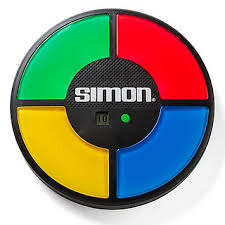
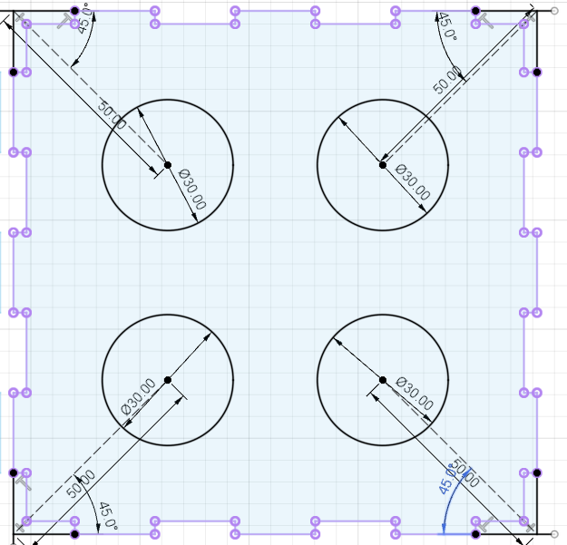
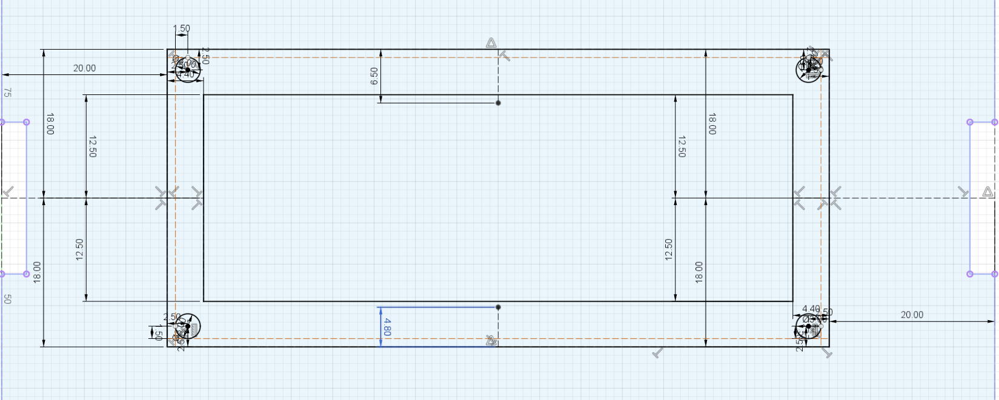
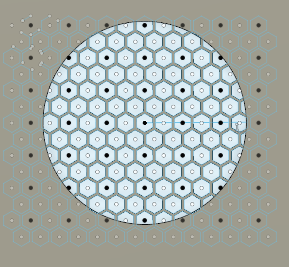
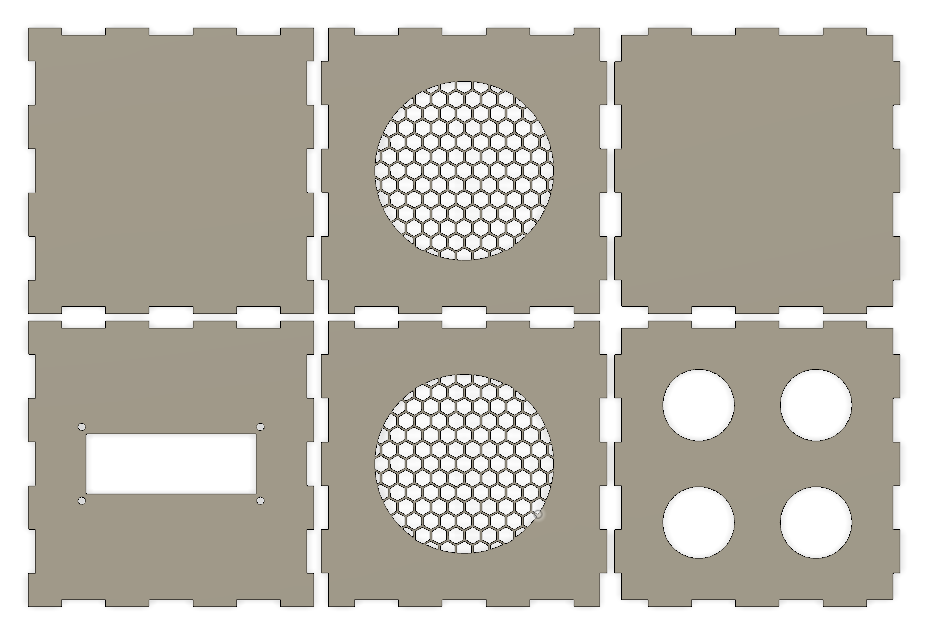

Final Project Documentation
This page contains all of my progress on my final project for the class.
For easy navigation, here's a table of contents!
Final Project Proposal (6/23/20)
3D Modeling (7/13/20)
Final Project Proposal: Simon Says Alarm Clock
June 23, 2020
Proposal: I have a bit of trouble waking up in the mornings (to the point where I usually have to set several alarms five minutes apart to even wake up). I was thinking of designing an alarm clock that would work like those old Hasbro Simon Says games, forcing me to use my memory to turn off the alarm sound. It could use 4 different color LED lights that could light up in a specific pattern with specific sounds, and I would have to repeat the pattern to turn off the alarm.

Designing the Components for my Final Project
July 13, 2020
Today I modeled the enclosure of my Simon Says alarm clock in Fusion 360! This file would be laser-cut on either plywood or acrylic. Here's my process in designing the alarm clock box.
First, I drew a sketch by hand of my alarm clock. I intend to buy light-up arcade buttons in 4 different colors which have a diameter of 30 mm to use as the Simon Says buttons. These will be located on the top of the clock. Then I will use an LCD display to show the time and mount it on the front of the box. Finally, both the left and right sides of the clock will have speaker grills for the Piezo buzzer.

I used Makercase to design a 120x120x120 mm box with finger joints and then imported that .stl file into Fusion 360 to make some modifications. I started with designing the top of the box by sketching out holes for the arcade buttons to fit into and then extruding the surrounding area.

The next side I designed was the front of the box with the LCD display. Victoria helped me by measuring her own LCD display with a caliper and writing down the dimensions for me, which I used in sketching out the display and mounting holes.

Lastly, and probably the most difficult, was designing the speaker grills. I ended up sketching four hexagons and using the rectangular pattern feature to spread the pattern across the entire diameter of the circle where I wanted the speaker grills. This took a lot of trial and error, and my Fusion 360 actually crashed twice because of how complex the pattern was. Luckily, I finally managed to get the right dimensions of the hexagons and the space between hexagons.

I extruded the honeycomb pattern and the space around the speaker cut-out to finish that side. Then, I made that side into a component. I copied and pasted the component for the opposite side. And after extruding the back and bottom of the alarm clock box without making any modifications, I finished my preliminary design!

Download my 3D model file here!
Edit: Initially, I exported the .dxf file from Fusion 360 but found that this would only export my sketches, including my sketch lines that I didn't want. To fix this, I had to create a sketch on the xy-plane and project all of the lines of my sides onto the sketch, then I saved that sketch as a .dxf. This seemed to solve the problem!